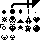
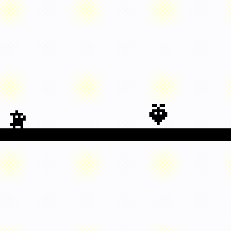
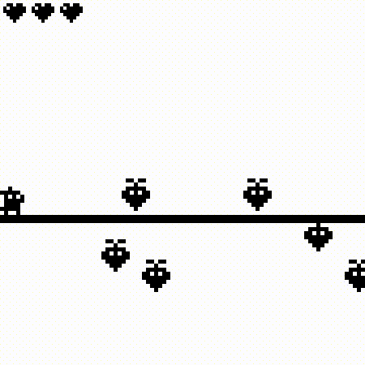

May 1st, 2020
Here's the living document I wrote as I developed my first game jam entry: bit-bunny!
Alright, the textures have been sent out. Let's take a look:

From what I can make out, I have a coin, a gem, a bomb particle, a skull, a ship, a heart, a turnip?, a star, a little character, an orb, and some other textures. I guess now I'll start staring real hard at it and see what my brain can come up with for an idea.
I think I want to use the little bunny character for the game. Maybe he can run to the ship? Something about rabbits and the moon seems pretty cool. As for enemies, maybe the turnip can be something some sort of flying enemy. Looking at the bottom two sprites, if I were to move the second one upside down, and combine it with the first I can make a little skeleton man. I can stick the orb on top of him and use the explosion to make it a bomb when thrown. Maybe the coins can be little collectables? Bunny man will have little hearts to collect to give him some leeway in getting hit. Perhaps I can have the small coins be worth 1 coin, and the large ones worth 10. Getting a hundred gives you another bunny, which I'll stick to the top of the screen to show a life counter.
Maybe I can combine two game genre's together. A platformer segment first, then when he gets into the ship, it turns into a Galaga-type segment where he shoots skulls. I can use the diamond thing as a charged shot. Not sure what to do about the 4th texture on the left, but other than that, I used all the assets. Now let's get to work.
To recap:
* A little platformer involving the turnips and bomb guys
* Followed by Galaga vs the skulls
* I'll have to code the collisons for the platformer, along with item pickups for the hearts and coins. Heartbeat should be able to help with a lot of that.
* Then I'll have to make another subset of the engine for a shooter game. This is looking pretty interesting
First hour in, I've managed to get Heartbeat working nicely with the rest of the code, and now the bunny moves and jumps. Next up to code in some enemies and give them AI.
Here's my first attempt at AI:

Wow. I did not get a lot done. My work had me bogged down all day and I took a nap after. I got back to work and managed to add some AI to the turnips to make them go up and down. I also added some entity collision check to heartbeat. Maybe it wasn't such a good idea to try to use such a young library for this, but in the very least I can improve it after this is over. I had some trouble getting them to move initially, but then I realized I hadn't told the turnips what do actually do when they first spawned in. So they just looked at me blankly and refused to move. I added this to their AI function but then it kept making them move down every frame, so I resolved to add it as a property to their entity code directly. Now that the turnips are deadly, I have to make them hit the player.
A bit more work done, I created the bomber and made him throw bombs at the player. Work was super time consuming again so I have very little time left to work on the game, so I'm dropping the Galaga segments and instead finishing the game as a platformer. I'm also dropping coins since I don't see a use for them in such a small game. I still have a few things left to add in, that being the ship (which will still be the end goal of a level), heart pickups, player victory, player death, and level loading. On top of that I have to get the tileset working (something I've never done before), and sit down and make a few levels. Then I'll grab some sound effects, some catchy theme, and add those and export. Sadly the game isn't as large (or as good) as I intended, but I suppose having a small game is better than no game. I currently have about 5 hours left to get all of this working.
I got some animations done and the tiles working. The ship is in the game and so are the hearts, I just need to get the win/loss conditions working. Then I need to build the level editor and have it read/load levels, add in a way to load the next one on the event of beating a level, and then add some sound effects. Then make a few levels and export.
I got the spaceship to lift off when the player gets in it, and made them flip over when they die. I need to very quickly build a level editor and pump out some levels. Then I need to write functions to save/read them. Then I'll quickly stick in some sound effects and maybe everything will align and I'll get this done. I hope.
Sidenote: I just found a bug where if the player jumps and hits their head on a tile, they'll stick. I could patch this out, but screw it, it's a feature. I'll design some levels around it for the lols.
I used some of the same ideas behind Project Neutron and repurposed it for bit-bunny. Had some trouble at first due to differing levelfile conventions, but I managed to get it working.
Update: I think I'm getting faster the more stress I get? I got the entire level editor working now in a couple minutes. I also quickly made the pngs actually have transparency so things don't look gross when they overlap.
I got the level editor fully working (I hope). I'm going to take a small break and build some levels, then get sequence loading working. After that, strap a song and some sound effects to it. Then play test, make some last changes, and export it. If all goes smooth, I'll write a quick write-up on itch and submit.
I got 5 levels built and added the sound effects. Due to time constraints this is really all I can do, so now I just have to quickly get the levels working in sequence.
Got sound hooked up, fixed a couple bugs, and removed my debug tools. I exported it all nice and stuck it on itch!

First off, I'm using love2d so I don't have a lot of things people with engines have, like an easy way to make collisions and all that fun stuff happen. Instead, I used my own library, Heartbeat, to do these things, but I ended up more or less merging both together because of how undeveloped Heartbeat was. I also didn't account for how much work I'd have this weekend. On the bright side, I know what to add to Heartbeat for the Metroidvania jam, so I might have a better time with that. All in all, I'm happy I managed to make a game over the weekend. Will I do it again? Probably. But I feel a bit burnt out, so I'll probably wait until the metroidvania jam before attempting another. Thanks for reading!